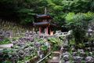

Cidade de Quioto

Multimédias
Fotografias



Vídeo
Poema
Quioto, Onde o Tempo Dança
Entre montanhas que abraçam o céu,
Quioto repousa, serena, a brilhar.
Nos templos antigos, o silêncio ecoa,
Sussurros de eras que não querem passar.
O ouro reluz no Kinkaku-ji,
Espelhado nas águas do lago tranquilo.
Enquanto o vermelho flamejante do Fushimi Inari,
Guia os passos por um caminho divino.
Na primavera, as cerejeiras florescem,
Um mar de pétalas, suaves ao vento.
E no outono, as folhas queimam o chão,
Tingindo de rubro cada pedaço do tempo.
O verão traz festivais ao luar,
Lanternas flutuam, dançando com o mar.
E no inverno, a neve silencia a cidade,
Um manto branco de calma e verdade.
Nas ruas estreitas de Gion à noite,
Geishas deslizam com graça e leveza.
O passado e o presente se entrelaçam,
Num ritmo eterno de pura beleza.
Quioto, onde o antigo encontra o novo,
E o tempo não corre, apenas passeia.
Uma cidade que respira história e arte,
Em cada esquina, em cada centelha.